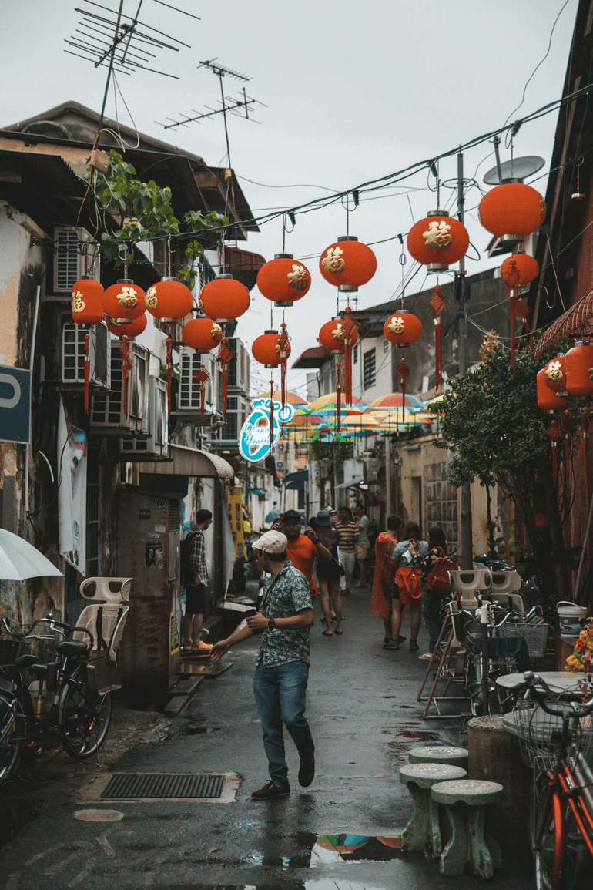

Heritage Zones
Step into the living history of George Town, Penang — a city where centuries-old streets, vibrant cultures, and timeless architecture come together in a breathtaking tapestry of East and West. Recognized as a UNESCO World Heritage Site since 2008, George Town’s heritage area is lovingly preserved within two distinctive zones: the Core Zone and the Buffer Zone.
Read More about Penang's heritage.
